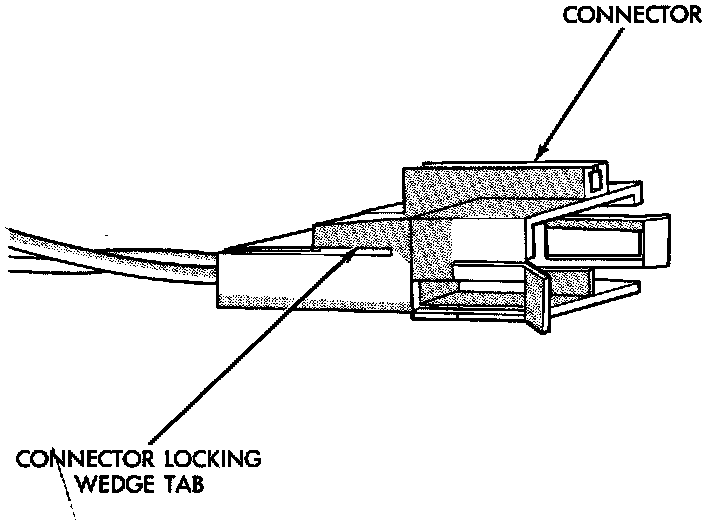
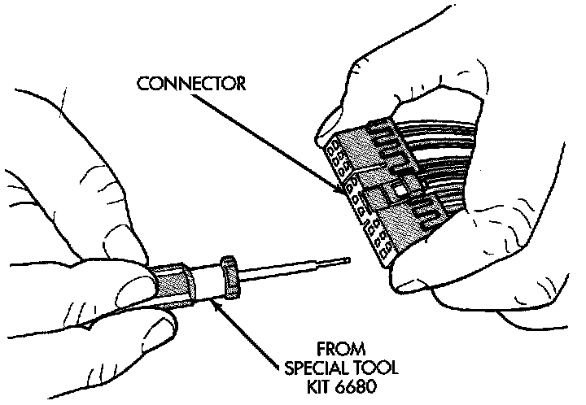
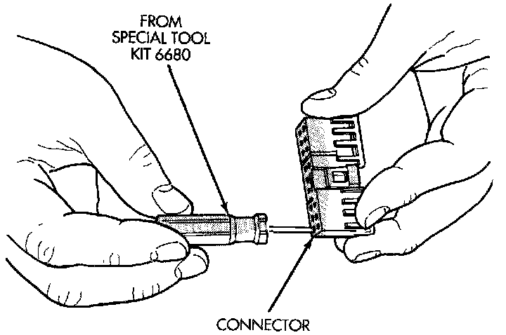

Connector Replacement
1. Disconnect the battery.2. Disconnect the connector (that is to be repaired) from its mating half/component.
Connector Locking Wedge:

3. Remove the connector locking wedge, if required.
Terminal Removal:

Terminal Removal Using Special Tool:

4. Position the connector locking finger away from the terminal using the proper pick from Special Tool Kit 6680. Pull on the wire to remove the terminal from the connector.
5. Reset the terminal locking tang, if it has one.
6. Insert the removed wire in the same cavity on the repair connector.
7. Repeat steps 4 through 6 for each wire in the connector, being sure that all wires are inserted into the proper cavities.
8. Insert the connector locking wedge into the repaired connector, if required.
9. Connect the connector to its mating half/component.
10. Connect the battery and test all affected systems.